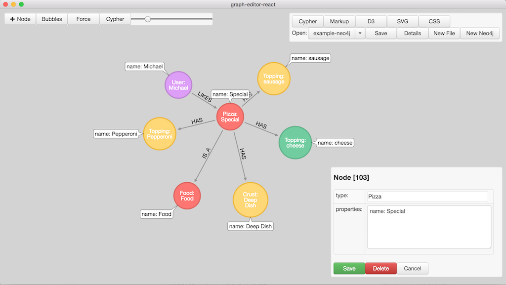
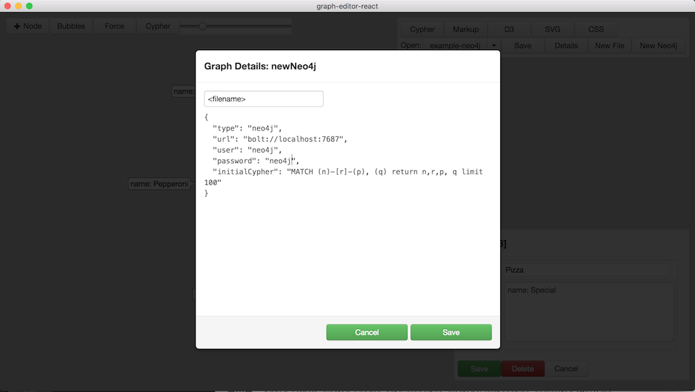
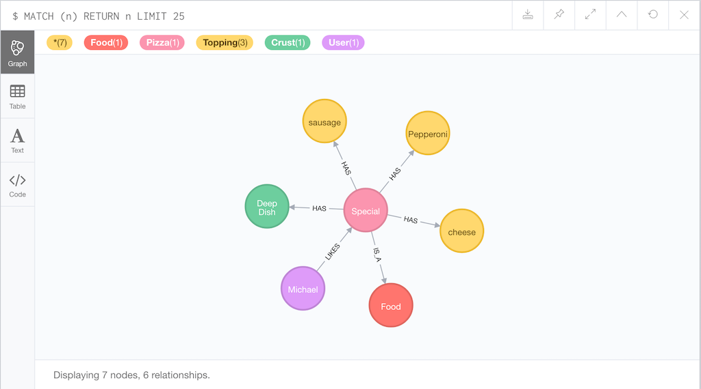

https://github.com/wwlib/graph-editor
graph-editor is an electron-webpack/react app for designing graphs and editing live neo4j databases.
The use of the yarn package manager is strongly recommended, as opposed to using npm.
yarn
# run application in development mode
yarn dev
# compile source code and create webpack output
yarn compile
# `yarn compile` & create build with electron-builder
yarn dist
# `yarn compile` & create unpacked build with electron-builder
yarn dist:dir

-Use the New Neo4j button to create a connection to a live neo4j database
"connection": {
"type": "neo4j",
"url": "bolt://localhost:7687",
"user": "neo4j",
"password": "neo4j",
"initialCypher": "MATCH (n)-[r]-(p) return n,r,p limit 100"
}

